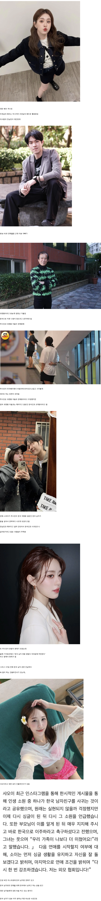

https://www.fmkorea.com/best/10293861206

https://www.fmkorea.com/best/10293861206

대만여행 금지?? 오케이
키 크고 하얗고 잘생긴 한국남자 아니면 포기할것
또 나만빼고 한국인이네
한국엔 두 종류의 생물학적 남성이 있다. '한국남자', '싸이족'
과연 내 국적은 어디인가
전남친도 인물이 못난건 아닌데 도대체 왜
??????
거짓말아니고 대만가서 한국인이라니까 진짜 존나좋아하더라ㅋㅋ 내년에 또가야쥐
남자 하관만 봐도 개연성이 넘치네
워싱빠징찡
하관만봐도 저남자는 dlss5고
누린 픽셀수준이다